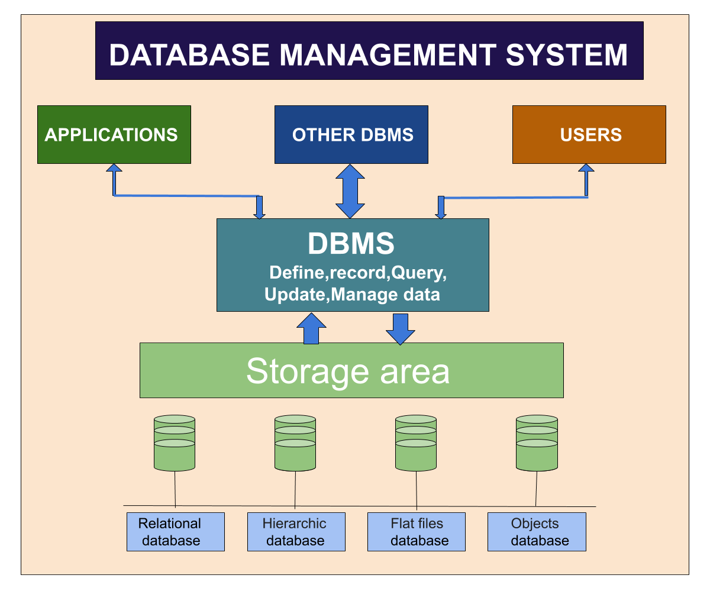

De logischelaag is voor het beheren en controleren van de hardware en software van de telefoon. Deze laag zorgt ervoor dat mensen computers goed kunnen gebruiken.
Het besturingssysteem is als het "brein" van de computer. Het verbindt hardware en software, zorgt ervoor dat alles goed samenwerkt. Ook zorgt het ervoor dat gebruikers de computer kunnen gebruiken voor verschillende taken, zoals googelen, teksten schrijven, games spelen, etc.
Het besturingssysteem heeft 3 belangrijke taken:
Talen en Compilers zorgen ervoor dat mensen en computers duidelijk en efficiënt met elkaar kunnen communiceren. Een programmaontwikkelaar schrijft een programma in een programmeer taal zoals bijvoorbeeld Python, Vervolgens wordt dir programma door een compiler omgezet naar een binaire code/taal die de computer begrijpt.
Met DBMS worden gegevens opgeslagen, beheerd, opgevraagd en beschermd. Het zorgt voor een makkelijke toegankelijkheid naar gegevens.
